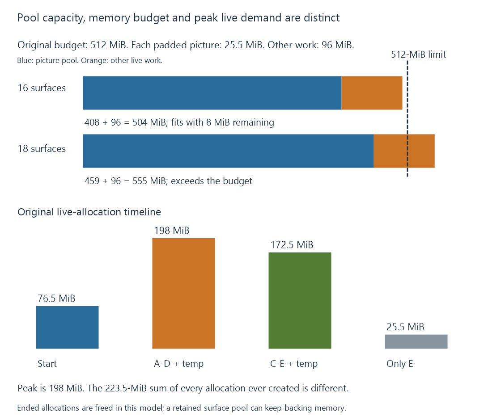

GPU memory limits in video processing
Video-processing memory demand comes from distinct live picture allocations, codec references, queues and intermediates whose layouts and lifetimes must fit the selected device’s usable limits.
Video processing stores reconstructed pictures, not only compressed packets. Reference frames, pending outputs, filter results and encoder inputs can keep several pictures live at once.
The usable memory limit is therefore a property of the selected layouts, allocation identities and lifetimes within the actual device path.
A surface costs more than its compressed packet
Use the original padded 4K P010-style layout developed in frame surfaces: 26,738,688 bytes per surface.
In binary units:
26,738,688 / 1,048,576 = 25.5 MiB per surface
A twenty-Mbit/s encoded source does not replace that picture allocation with twenty million bits for every decoded second. Compression and reconstructed storage have different representations.
Intermediate float/RGBA pictures, driver-specific padding, tiling or staging can introduce other costs.
Count distinct allocations
Several references or views can point to the same backing storage. Summing every visible handle as a new full allocation can overcount.
An original owner-set example is:
Decode-reference uses: A, B, C, D
Queued-stage uses: C, D, E
Encoder uses: D, F
There are nine owner entries, but six distinct backing labels: A through F.
At 25.5 MiB each, six allocations cost 153 MiB. Counting all owner entries independently would report 229.5 MiB.
The real implementation can also create separate result or staging allocations. The correct identity comes from the actual resource relationship; matching labels in this example only illustrate the distinction.
A pool and its other live work share the budget
Consider a declared 512-MiB budget for one processing route, with 96 MiB of other live allocations:
| Pool choice | Picture allocations | Other live memory | Modeled total |
|---|---|---|---|
| 16 surfaces | 408 MiB | 96 MiB | 504 MiB |
| 18 surfaces | 459 MiB | 96 MiB | 555 MiB |
The first fits this budget with eight MiB remaining. The second does not.

These values are invented teaching inputs. They are not total VRAM or a recommendation for a decoder's buffer count.
More buffering extends storage lifetimes
A reference picture must remain available until dependent reconstruction ends. A filter input or encoder input remains retained until the relevant consumer finishes.
More asynchronous work can increase overlap but also increase the number of pictures waiting or still in use. A decoder can consequently run out of available surface slots before a global byte-allocation limit is reached.
The pool's capacity and the device's memory budget are different constraints.
Concurrent jobs have combined demand
For another original model, each job uses ten of the same surfaces plus forty MiB of other distinct live work:
Per job = 10 × 25.5 + 40 = 295 MiB
Two independent jobs = 590 MiB
Under the declared 512-MiB budget, one fits and two do not. Shared resources or another layout would change the accounting.
A permitted encoder session count does not grant additional memory for those jobs. Concurrent sessions separates that policy from capacity.
Peak demand is a timeline
Counting every allocation ever created is another kind of overcount. The important constraint is which backing allocations remain live together.
Use an original model with the same 25.5-MiB pictures and a temporary 96-MiB processing allocation:
| Observation | Live picture allocations | Temporary memory | Total |
|---|---|---|---|
| Start | A, B, C | 0 MiB | 76.5 MiB |
| Processing begins | A, B, C, D | 96 MiB | 198 MiB |
| A and B end; E is created | C, D, E | 96 MiB | 172.5 MiB |
| C, D and temporary work end | E | 0 MiB | 25.5 MiB |
Five distinct pictures occur during the model, but they never all coexist with the temporary allocation. Its peak is 198 MiB, not the 223.5 MiB sum of every picture ever created plus temporary storage.
This model assumes the ended allocations are actually freed. Returning a surface lease to an existing pool can instead make a slot reusable while the pool retains its backing memory. A lower queue occupancy then does not necessarily reduce allocated bytes.
The distinction explains why a workload can stop using a picture without immediately returning all associated memory to the device budget. A real account needs both live consumers and the allocator/pool retention policy.
Limits can apply at several scopes
An API can expose a maximum individual allocation, supported image extents or a session's reference/working-memory requirements. The application's route also competes with other live device use.
A product's advertised total memory is therefore not identical to the free budget available for this exact pipeline.
See Also
- Hardware frame surfaces and GPU contexts
- Zero-copy video pipelines and the boundary being avoided
- Concurrent encoder sessions, policy and capacity
- Mixed hardware and software filtering
- DRM PRIME and DMA-BUF frame sharing